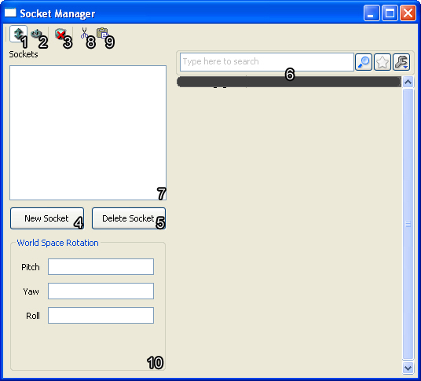
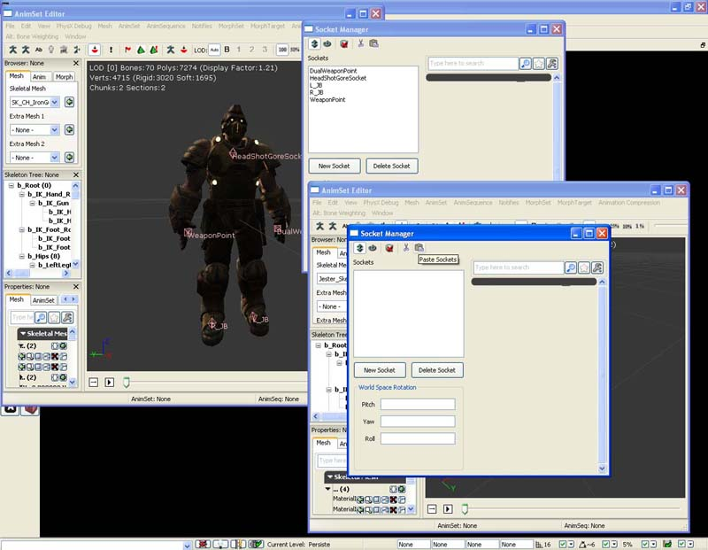
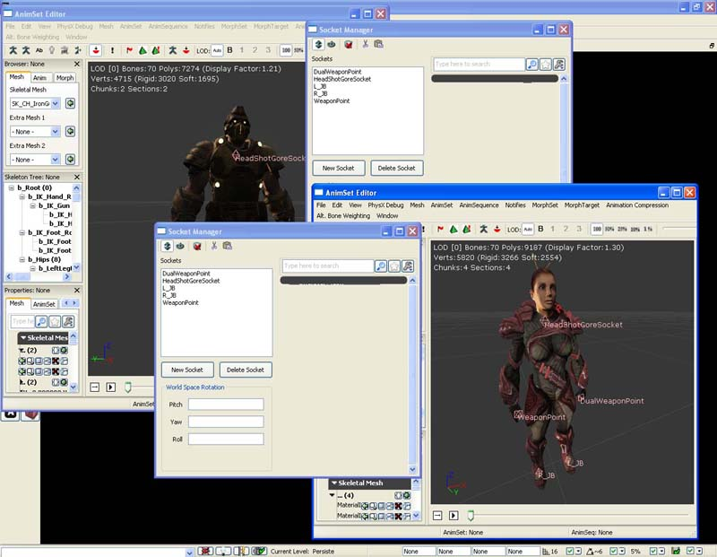
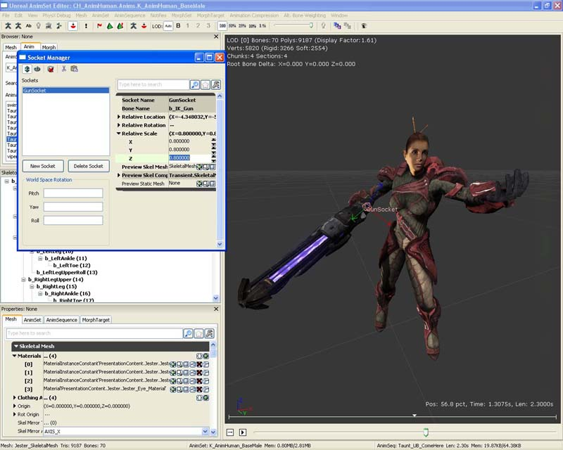
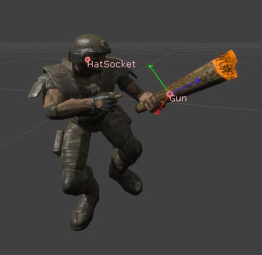
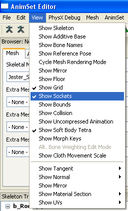
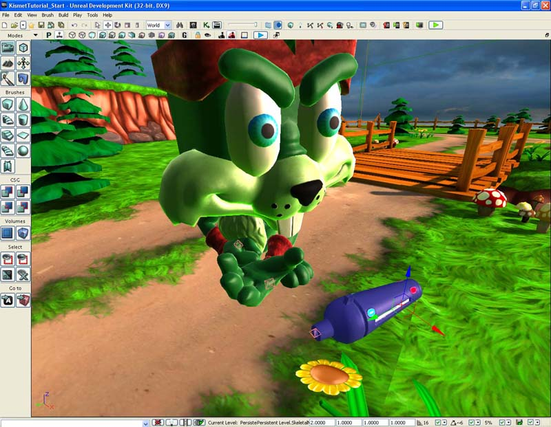
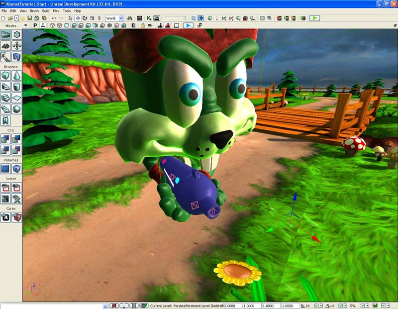

UDN
Search public documentation:
SkeletalMeshSocketsKR
English Translation
日本語訳
中国翻译
Interested in the Unreal Engine?
Visit the Unreal Technology site.
Looking for jobs and company info?
Check out the Epic games site.
Questions about support via UDN?
Contact the UDN Staff
日本語訳
中国翻译
Interested in the Unreal Engine?
Visit the Unreal Technology site.
Looking for jobs and company info?
Check out the Epic games site.
Questions about support via UDN?
Contact the UDN Staff
스켈레탈 메시 소켓
문서 요약: 스켈레탈 메시에 게임내에서 다른 오브젝트를 부착하는 데 쓸 수 있는 네임드 소켓을 추가하는 법에 대한 튜토리얼입니다. 문서 변경내역: James Golding 작성. James Tan 업데이트. 홍성진 번역.
개요
보통 게임에서 한 오브젝트를 캐릭터의 본에 부착(attach)하게 됩니다. 손에 무기를 부착할 수도 있고, 머리에 모자를 부착할 수도 있죠. 언리얼 엔진 3 에서는 애님세트 에디터(AnimSet Editor)에서는 소켓(Socket)을 만들어, 스켈레탈 메시 속 본에서 오프셋시키는 기능을 낼 수 있습니다. 그런 다음 그 소켓의 트랜슬레이션, 로테이션, 스케일을 본에 상대적으로 조절할 수 있습니다. 스태틱 메시나 스켈레탈 메시에도 소켓을 부착한 모습을 미리볼 수 있습니다. 이런 방법을 통해 손쉽게 콘텐츠 제작자가 스켈레탈 메시에 소켓을 셋업한 다음, 프로그래머에게 오브젝트를 부착시킬 소켓 이름을 알려주면 됩니다.
소켓 매니저
스켈레탈 메시용 소켓 매니저(Socket Manager)를 여는 방법은, 일단 콘텐츠 브라우저에서 스켈레탈 메시를 찾아 더블클릭하면 애님세트 에디터에 스켈레탈 메시가 열립니다. 거기서 소켓 매니저 버튼을 누르면 됩니다. 현재 같은 모양 아이콘이 둘 있는데, 애님세트 에디터 안에서 소켓 매니저 버튼의 위치는:
 이 버튼을 클릭하면 떠다니는 소켓 매니저 창이 열립니다.
이 버튼을 클릭하면 떠다니는 소켓 매니저 창이 열립니다.

- Translate Socket 소켓 트랜슬레이트 - 선택된 소켓의 상대 트랜슬레이션을 변경합니다.
- Rotate Socket 소켓 로테이트 - 소켓의 상대 로테이션을 변경합니다.
- Clear Previews 미리보기 지우기 - 소켓에 부착된 메시를 전부 지웁니다.
- New Socket 새 소켓 - 소켓 생성 대화창이 열립니다.
- Delete Socket 소켓 삭제 - 선택된 소켓을 삭제합니다.
- Socket Properties 소켓 프로퍼티 - 선택된 소켓에 대한 프로퍼티 패널입니다.
- Socket List 소켓 목록 - 이 스켈레탈 메시에 대한 소켓 전체 목록입니다.
- Copy Sockets 소켓 복사하기 - 모든 소켓을 클립보드에 복사합니다.
- Paste Sockets 소켓 붙여넣기 - 클립보드에서 모든 소켓을 붙여넣습니다.
- World Space Rotation 월드 스페이스 로테이션 - 월드 스페이스 로테이션으로 선택된 소켓에 상대적인 로테이션을 조절할 수 있습니다.
소켓 만들기
소켓을 새로 만들려면 소켓 매니저 안에서 [새 소켓] 버튼을 누르십시오. 그러면 소켓을 부착시킬 본을 선택하라는 콤보 박스가 나타납니다. 스켈레탈 메시의 모든 LOD 에 있는 본만 선택할 수 있다는 점 참고하시기 바랍니다.
 본을 선택하고나면 새 소켓에 지어줄 (모든 스켈레탈 메시를 통털어서가 아닌, 이 스켈레탈 메시 안에서) 고유한 이름을 입력해 줘야 합니다. 그러면 새 소켓이 만들어져 뷰포트에 보일 것입니다.
본을 선택하고나면 새 소켓에 지어줄 (모든 스켈레탈 메시를 통털어서가 아닌, 이 스켈레탈 메시 안에서) 고유한 이름을 입력해 줘야 합니다. 그러면 새 소켓이 만들어져 뷰포트에 보일 것입니다.

소켓 변경하기
소켓 매니저는 소켓 프로퍼티를 변경하는 데도 사용됩니다. 소켓 목록에서 변경하고자 하는 소켓을 선택하면 그 프로퍼티가 소켓 프로퍼티 부분에 표시됩니다.
상대 위치
소켓의 상대 위치는 두 가지 방법으로 조절할 수 있습니다.- 첫째, 소켓 프로퍼티 안에서 구조체를 확장시켜 Relative Location X Y Z 값을 직접 설정해 줍니다. 이렇게 조절해 주면 뷰포트 속의 소켓 상대 위치가 업데이트됩니다.
- 둘째, 소켓 매니저의 툴바 버튼을 통해 [소켓 트랜슬레이션] 모드로 설정합니다. 그러면 뷰포트에 생기는 트랜슬레이트 위젯으로 소켓을 옮길 수 있습니다.

상대 회전
소켓의 상대 회전은 세 가지 방법으로 조절할 수 있습니다.- 첫째, 소켓 프로퍼티 안에서 구조체를 확장시켜 Relative Rotation Pitch/Yaw/Roll 값을 직접 설정해 줍니다. 이렇게 조절해 주면 뷰포트 속의 소켓 상대 회전이 업데이트됩니다.
- 둘째, 소켓 매니저의 툴바 버튼을 통해 [소켓 로테이션] 모드로 설정합니다. 그러면 뷰포트에 생기는 로테이트 위젯으로 소켓을 회전시킬 수 있습니다.
- 셋째, World Space Rotation (월드 스페이스 로테이션) 툴을 사용합니다. 월드 공간 속에서 소켓과 오브젝트를 일직선으로 정렬해줄 필요가 있을 때 좋습니다. 툴이 필요한 계산을 해서 알맞게 상대 로테이션을 설정해 주지만, 자동으로 새로고쳐지지는 않습니다. 변경사항을 확인하려면 소켓 매니저를 닫았다 열어 보십시오.

상대 스케일
소켓의 상대 스케일은 소켓 프로퍼티 안에서 구조체를 확장시켜 Relative Scale X/Y/Z 값을 직접 설정하여 조절하면 됩니다. 이렇게 조절해 주면 뷰포트 속에 소켓의 부착된 메시가 (있다면) 업데이트될 것입니다.
스켈레탈 메시 사이에 소켓 세트 복사하기/붙여넣기
공통의 스켈레톤이나 본 이름을 공유하는 스켈레탈 메시가 여럿 있다면, 그 사이에서 소켓 세트를 복사해 붙일 수 있습니다. 특히 모든 기능이 같은 식으로 돌아가는 아바타가 다수 있는 게임에서는, 개발 속도를 높이는 데 큰 도움이 됩니다. 참고로 모든 소켓을 복사하기는 하지만, 기존 소켓을 덮어쓰지는 않습니다. 기존 소켓을 덮어쓰고 싶은 경우, 먼저 지워줘야 합니다. 애님세트 에디터에서 소스 스켈레탈 메시를 연 다음 소켓 매니저를 엽니다. [소켓 복사하기]를 클릭합니다. 애님세트 에디터에서 타겟 스켈레탈 메시를 연 다음 소켓 매니저를 엽니다. [소켓 붙여넣기]를 클릭합니다.
애님세트 에디터에서 타겟 스켈레탈 메시를 연 다음 소켓 매니저를 엽니다. [소켓 붙여넣기]를 클릭합니다.

타겟 스켈레탈 메시에 추가된 모든 소켓에 오차가 거의 없는 것을 확인할 수 있습니다. 일일히 모든 소켓을 다시 만들어줄 필요가 없는 것입니다!
스켈레탈 메시 및/또는 스태틱 메시 미리보기
메시에 부착한 소켓 프로퍼티를 조절하면서 실제 모습을 확인하고 싶을 때가 있습니다. 예를 들면 캐릭터의 손에 무언가를 일치시키고자 하는 상황이 그러합니다. 소켓 프로퍼티에 보면 Preview Skel Mesh 와 Preview Static Mesh 필드가 둘 있습니다. 콘텐츠 브라우저에서 스태틱 메시나 스켈레탈 메시를 선택해 두고서, 여기 [녹색 화살표]를 클릭하면 해당 필드에 설정해줄 수 있습니다. 그러면 뷰포트에 나타날 것입니다. [텍스트 비우기] 버튼으로 모든 소켓 미리보기 메시를 비울 수도 있습니다. Gun 소켓이 있는 스켈레탈 메시에, 스켈레탈 메시를 부착한 것입니다.
LeftHand 소켓이 있는 스켈레탈 메시에, 스태틱 메시를 부착한 것입니다.
소켓 보기
소켓은 뷰포트에 핑크색 이름이 달린 핑크색 다이아몬드로 표시됩니다.

소켓 매니저나 "보기" 메뉴의 "소켓 표시" 체크박스를 통해 소켓 렌더링을 토글할 수 있습니다.
소켓 사용하기
언리얼스크립트
언리얼스크립트로 스켈레탈 메시 컴포넌트 안의 소켓을 참조/사용할 수 있습니다.스켈레탈 메시에 소켓이 있는지 검사하기
다음 언리얼스크립트 코드 스니펫을 사용하면 스켈레탈 메시에 소켓이 있는지 검사해 볼 수 있습니다. 반환된 소켓 참조를 살펴서 소켓의 프로퍼티를 구할 수도 있습니다.
if (SkeletalMeshComponent.GetSocketByName(SocketName) != None)
{
// 소켓 있음
}
else
{
// 소켓 없음
}
소켓의 월드 위치와 회전 구하기
언리얼스크립트로 언제든 소켓의 위치와 회전을 구할 수 있습니다. 트레이스를 쏜다든가 할때 좋습니다.
local Vector SocketLocation; // 변수를 사용하여 클래스 인스턴스 안에 글로벌하게 저장할 수도 있습니다.
local Rotator SocketRotation; // 변수를 사용하여 클래스 인스턴스 안에 글로벌하게 저장할 수도 있습니다.
if (SkeletalMeshComponent.GetSocketWorldLocationAndRotation(InSocketName, SocketLocation, SocketRotation, 0 /* 컴포넌트 공간에 이것을 반환하려면 1 사용 */ )
{
// 반환된 소켓 위치와 회전으로 무언가 해라
}
else
{
// 소켓 없음
}
소켓의 본 구하기
다음 코드 스니펫을 사용하면 소켓의 본을 구할 수 있습니다.
local Name SocketBoneName;
SocketBoneName = SkeletalMeshComponent.GetSocketBoneName(InSocketName);
if (SocketBoneName != '' && SocketBoneName != 'None')
{
// 반환된 본으로 무언가 해라
}
소켓에 컴포넌트 부착하기
파티클 이펙트, 스켈레탈 메시, 스프라이트, 스태틱 메시와 같은 컴포넌트를 소켓에 하드 어태치(hard attach)할 수 있습니다.SkeletalMeshComponent.AttachComponentToSocket(Component, SocketName);
액터를 소켓에 부착하기
액터를 소켓에 부착할 수 있기는 한데, 엄밀히 말하자면 단지 액터의 위치와 회전을 소켓에 일치하도록 설정한 다음, 액터 부착 방법을 통해 부착하는 것입니다. 부착된 액터는 블록하지 말아야 하며, bHardAttach 가 true 로 설정되어 있어야 합니다. Pawn 을 베이스로 사용하려면 bCanBeBaseForPawns 가 true 로 설정되어 있어야 합니다.
local Vector SocketLocation;
local Rotator SocketRotation;
local Actor Actor;
if (SkeletalMeshComponent != None)
{
if (Archetype != None && SkeletalMeshComponent.GetSocketByName(SocketName) != None)
{
SkeletalMeshComponent.GetSocketWorldLocationAndRotation(SocketName, SocketLocation, SocketRotation);
Actor = Spawn(Archetype.Class,,, SocketLocation, SocketRotation, Archetype);
if (Actor != None)
{
Actor.SetBase(Self,, SkeletalMeshComponent, SocketName);
}
}
}
언리얼 에디터
에디터에서 스켈레탈 메시에 액터를 부착할 수도 있습니다. 먼저 소켓 스내핑을 켭니다. 그러면 뷰포트에 모든 소켓이 표시됩니다. 부착하려는 액터를 선택합니다. 부착시킬 소켓을 클릭합니다.
그러면 뷰포트에 모든 소켓이 표시됩니다. 부착하려는 액터를 선택합니다. 부착시킬 소켓을 클릭합니다.

이제 액터는 소켓의 위치에 방향으로 설정되며, 타겟 소켓의 스켈레탈 메시 컴포넌트를 소유하는 액터에 부착됩니다.